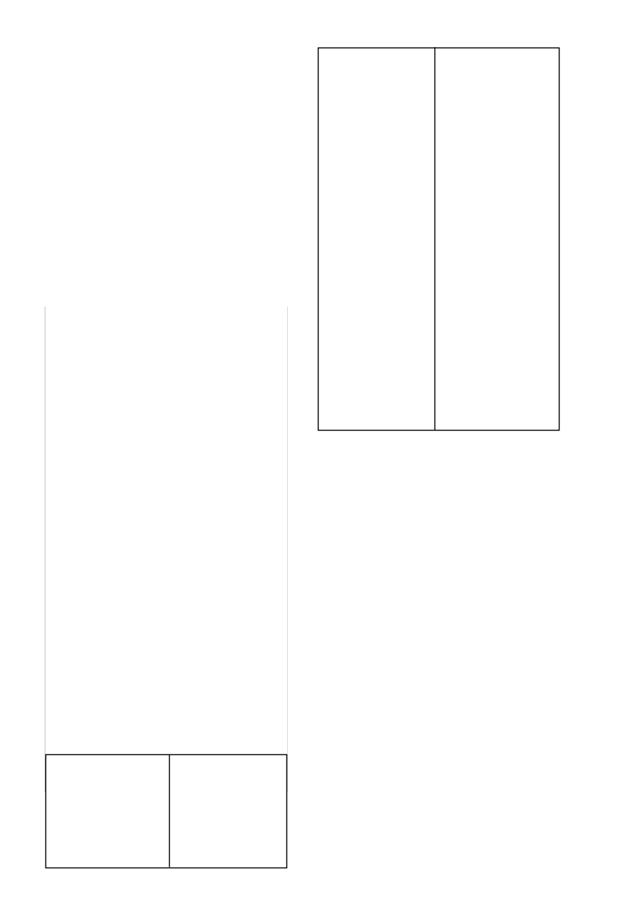

PRIMAGRAM GOLD
/ 2
a) Mielies, graansorghum en suikerriet - geen.
b) Grondbone, sojabone, droëbone, sonneblomme, aartappels,
voersorghum en kleingraan - 12 maande.
c) Alle ander gewasse - 18 maande (‘n toetsplanting word nog-
tans aanbeveel).
d) Waar die hoeveelheid
PRIMAGRAM GOLD
wat toegedien
is, nie 2,8
l
/ha oorskry het nie, kan die wagperiodes onder (b)
hierbo genoem tot 9 maande verkort word, uitgesonder sand-
gronde van die Noordwes Provinsie en Noordwes Vrystaat wat
0 - 10 % klei bevat.
Belangrik
Bogenoemde wagperiodes geld slegs indien die korrekte hoeveel-
hede
PRIMAGRAM GOLD
toegedien is volgens die grondtipe en
normale of bogemiddelde reënval voorgekom het na die toedie-
ning van
PRIMAGRAM GOLD
. Waar GESAPRIM SUPER (L3914)
by
PRIMAGRAM GOLD
gevoeg word, moet die wagperiodes
soos op die GESAPRIM SUPER etiket aangegee, nagekom word.
•
In die Springbokvlaktegebied word
PRIMAGRAM GOLD
normaalweg nie aanbeveel nie. Indien u dit wil gebruik, raad-
pleeg eers die verteenwoordiger van Syngenta.
Waarskuwing: Moontlike beskadiging van triasien sensi-
tiewe gewasse.
•
Waar gronde met kalk behandel is om die pH te verhoog mag
die moontlikheid van gewas beskadiging dramaties verhoog
in gronde waar triasienes voorheen toegedien is. Dit gebeur
as gevolg van die triasien molekule wat op die klei kompleks
vervang word met kalsium katione en die triasien dus meer
beskikbaar word in die grondwater kompleks.
•
Geen triasien sensitiewe gewasse moet na kalk toedienings
geplant word nie. Dit is selfs van toepassing indien triasiene
teen wisselbou dosisse gespuit is in vorige jare. Slegs mie
lies
moet geplant word direk na kalk toedienings.
•
Triasien sensitiewe gewasse sluit in alle breëblaargewasse
soos die boon gewasse en sonneblomme asook alle klein-
graangewasse soos koring.
•
Hierdie waarskuwing waarborg egter nie dat geen skade aan
selfs mielies in die daaropvolgende aanplanting sal voorkom
nie aangesien groot volumes triasiene beskikbaar mag raak
afhangende van die volume kalk wat toegedien word en die
reënval wat kan voorkom.
Waarskuwing:
Moontlike
verhoogde effektiwiteit, fitotok-
sisiteit en verlengde nawerking.
•
‘n Verhoging in die grond pH na vlakke bokant 7 skep
toestande waar verhoogde effektiwiteit en gepaardgaande
ve rlaging in selektiwiteit kan voorkom. Hierdie verhoogde pH
vlakke kan ook verlengde grondnawerking tot gevolg hê wat
veral onder besproeiing die opvolg gewaskeuse mag beïn-
vloed.
•
Waar grond pH verstellings gedoen is, moet gelet word op die
gebruik van sulfoniel ureum onkruiddoders, triazolopiri midien
sulfonanilied onkruiddoders en imidasolinoon on kruid doders
wat almal baie sensitief is vir grond pH fluktuasies.
Kontak u plaaslike SYNGENTA verteenwoordiger voordat
op enige bekalkings program besluit word om gewas
keuses en gewas beskermings programme te bespreek.
5. ONKRUIDE WAT BEHEER WORD
Die volgende onkruide word normaalweg deur ‘n voorop-
komtoediening beheer teen die toedieningshoeveelhede soos
hieronder aangedui:
Acanthospermum australe
agtsadige kruipsterklits
Acanthospermum glabratum
vyfsadige kruipsterklits
Acanthospermum hispidum
regopsterklits
Amaranthus deflexus
meerjarige misbredie
Amaranthus hybridus
gewone misbredie
Amaranthus spinosus
doringmisbredie
Amaranthus thunbergii
rooimisbredie
Bidens bipinnata
Spaanse knapsekêrel
Bidens pilosa
knapsekêrel
Brachiaria eruciformis
litjiesinjaalgras
Chenopodium album
withondebossie
Chenopodium carinatum
groenhondebossie
Chloris virgata
witpluim Chloris
Cleome monophylla
rusperbossie
Cleome rubella
mooinooientjie
Commelina benghalensis
Bengaalse
wandelende
Jood
(onder gunstige kli-
maatstoestande op ligte tot
medium gronde)
Cosmos bipinnatus
kosmos
Crotalaria sphaerocarpa
mielie Crotalaria
Dactyloctenium aegyptium
hoenderspoor
Datura ferox
grootstinkblaar
Datura stramonium
stinkblaar
Digitaria sanguinalis
kruisvingergras
Echinochloa crusgalli
hanepootmanna
Eleusine indica
jongosgras
Chamaesyce prostrata
harige kruipmelkkruid
Galinsoga parviflora
knopkruid
Gisekia pharnaceoides
Gisekia
Hibiscus trionum
Terblansbossie
Nicandra physaloides
basterappelliefie
Panicum maximum
gewone buffelsgras
Panicum schinzii
soetbuffelsgras
Physalis angulata
wilde-appelliefie
Portulaca oleracea
porslein
Pseudobrachiaria deflexa
bastersinjaalgras
Richardia brasiliensis
tropiese Richardia
Schkuhria pinnata
kleinkakiebos
Setaria pallide-fusca
rooiborselgras
Setaria verticillata
klitsborselgras
Sorghum bicolor
subsp.
gewone wilde-sorghum
arundinacaum
Tagetes minuta
kakiebos
Tragus racemosus
grootwortelsaadgras
Urochloa panicoides
beesgras
Urochloa mosambicensis
bosveldbeesgras
Wisselvallige beheer mag op turfgronde verkry word.
In suikerriet kan
Cyperus esculentus
onder gunstige klimaats-
toestande op ligte tot medium gronde deur die vooropkomtoe-
diening van
PRIMAGRAM GOLD
beheer word. Die gebruik van
GRAMOXONE in ‘n mengsel met
PRIMAGRAM GOLD
as ‘n
vroeë na-opkomgrondtoediening sal goeie beheer van
C. escu-
lentus
verskaf.
Volkome beheer van alle onkruide is nie altyd moontlik nie.
Suikerrietlande moet dus goed dopgehou word en die onkruide
wat deurkom, moet met die hand verwyder word. Dit is veral
belangrik met grootgroeiende onkruide soos
gewone buffels-
gras
(P. maximum).
In mielies en graansorghum kan
geeluintjie
(C. esculentus)
beheer word, mits daar aan die volgende voorwaardes voldoen
word:
•
Die plantproses onmiddellik voorafgegaan is deur ‘n deeg
like
ploegbewerking met ‘n skaarploeg.
•
‘n Saadbed voorberei wat relatief fyn, egalig en ferm is.
•
Die onkruiddodertoediening gevolg word deur minstens 10
- 20 mm sagte deurdringende reën of besproeiing om die
on kruiddoder in die grond in te loog voordat
C. esculentus
opkom (gewoonlik 7 - 10 dae na deeglike grondbewerking).
Namate die grond swaarder word, is meer reën of besproeiing
nodig om goeie resultate te verkry. ‘n Groter kans op reën
bestaan in die laaste helfte van die plantseisoen (November).
•
Reënval na onkruiddodertoediening maar voor
C.
esculentus
opkoms is noodsaaklik vir optimale
C
.
esculentus
beheer.
Gevolglik moet
PRIMAGRAM GOLD
tydens of onmiddellik na
die plantproses toegedien word.
6. GEBRUIKSAANWYSINGS
Gebruik slegs soos aangedui.
6.1
VERENIGBAARHEID
Die verenigbaarheid van
PRIMAGRAM GOLD
met ander
produkte kan beïnvloed word deur die formulasie van die betrokke
produkte asook deur die kwaliteit van die water. Aangesien die
formulasie van produkte kan verander sonder die medewete van
Syngenta en die kwaliteit van die water ook van plaas tot plaas
